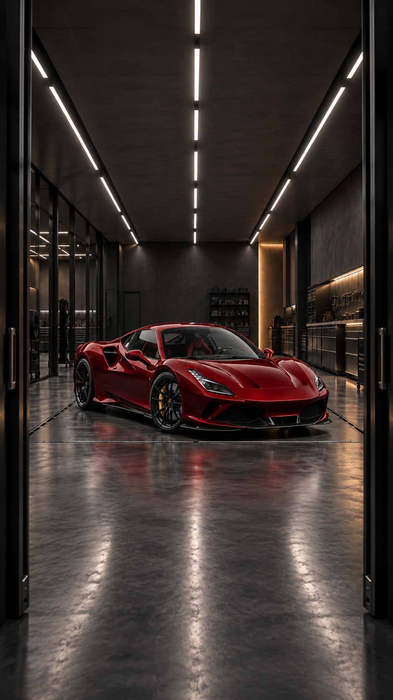
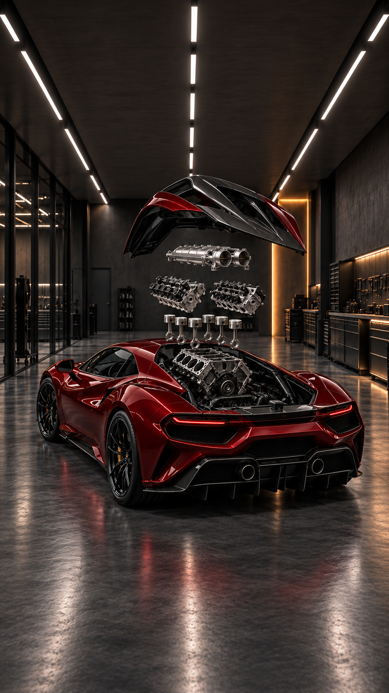
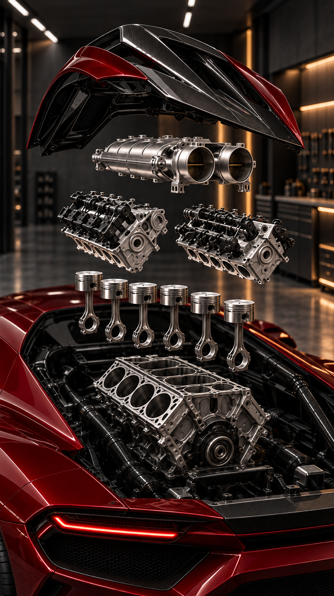

9:16 · 10 secondes · sortie souhaitée 1080 × 1920. Les deux premières images sont les keyframes. La troisième est une référence de détail facultative.



Prompt à copier · Réglages de sortie séparés
| 0–0,75 s | Entrée rapide dans l’atelier |
| 0,75–2,1 s | Ralentissement sur la peinture |
| 2,1–3,6 s | Accélération puis détail carbone |
| 3,6–5,7 s | Orbite arrière et séparation mécanique |
| 5,7–6,9 s | Avancée puis gros plan admission |
| 6,9–7,7 s | Culasses |
| 7,7–8,55 s | Pistons et bielles |
| 8,55–10 s | Recul puis arrêt sur la keyframe finale |